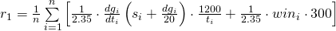

Здравствуйте, товарищи!
Продолжаем искать идеальную формулу для рейтинга.
На этот раз все немного по-другому. В данной странице есть возможность самому подобрать формулу для подсчета рейтинга игроков. Обозначения такие:
- s - scores
- k - kills
- d - deaths
- dd - damage dealt (сколько раздал), он же damage given
- dg - damage given (сколько раздал), он же damage dealt
- dt - damage taken (сколько поглотил)
- mc - captures
- ma - assists
- md - defends
- w - победа
Если не хочется самому подбирать - есть готовые
Напомню, что рейтинг игрока считается как средний рейтинг за матчи. Рейтинг за матч высчитывается по определенной формуле.
Предлагаемые формулы вычисления рейтинг игрока за матч обозначены номерами:
- 


- Количество побед в процентном соотношении
- Только по очкам (с учетом timefactor)
- Своя. Вариант 1
- Своя. Вариант 2
- Своя. Вариант 3
Для удобства сравнения можете
- добавить еще таблицы с помощью кнопки рядом
- кликнуть на строку с игроком, чтобы он высвечивался во всех таблицах
Спасибо за внимание,
eugene